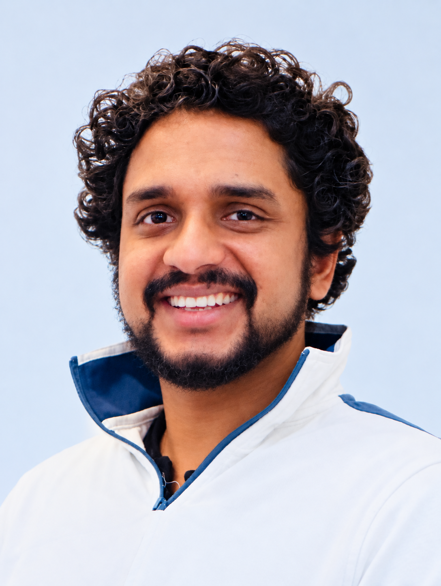

University Teaching
With a focus on connecting theory, practical applications, and modern active learning.
- Teaching philosophy
- Teaching portfolio
- Subjects taught
Computational Neuroimaging Researcher, University Educator, and Mechanical & Control Systems Engineer with experience spanning industrial automation, robotics, and engineering design.

Explore my university teaching, research work, engineering experience, projects, and growing collection of academic resources.
With a focus on connecting theory, practical applications, and modern active learning.
At the intersection of biomedical imaging, computational analysis, and neurophysiology.
Bringing real-world industrial experience to automation, control systems, robotics, and mechanical engineering
An interdisciplinary professional background connecting mechanical engineering, control and automation, university education, and biomedical engineering research.
My academic background began in mechanical engineering, later specializing in industrial automation, control, and mechatronics, and eventually extending into biomedical engineering. This combination has allowed me to develop a broad engineering perspective for solving real-world engineering problems through system design and implementation.
My professional experience initiated in engineering system design, installation, commissioning, and maintenance, with practical experience in industrial automation and mechanical engineering. I later brought this industry experience into university teaching, where I taught subjects including Engineering Mechanics, Control Systems, Applied Thermodynamics, Vehicle Technology, Computer-Aided Design, and other engineering courses. Industrial experience always shaped my approach to teaching by connecting fundamental engineering concepts with practical applications and real-world systems.
More recently, my work in Finland has focused on biomedical engineering research, particularly the quantitative analysis of physiological signals and neuroimaging data. My research combines computational methods, signal processing, and biomedical imaging to investigate complex neurophysiological phenomena.
A career combining industrial engineering, university teaching, and biomedical engineering research.
My teaching approach combines structured explanations with active learning, real-world examples, discussion, practical application, and formative feedback.
I aim to create an environment where students can explore concepts, ask questions, connect theory with real-world situations, and develop practical engineering skills.
I use structured explanations together with examples, interactive discussion, hands-on application, and formative feedback to support student learning.
A detailed overview of my teaching philosophy, university teaching experience, pedagogical development, and approach to engineering education.
View full teaching portfolio →Engineering subjects taught across mechanical engineering, control systems, vehicle technology, CAD, thermodynamics, and related technology-focused areas.
Lecturer – Engineering Technology · 2021–2024
Official institution page →Lecturer – Mechanical Technology · 2019–2021
Official institution page →
Nearly six years of professional engineering experience across
industrial automation and control systems, mechanical engineering,
and general engineering maintenance.
My experince as Project engineer has included design and implementation of automation system with
PLC-based control, machine integration and pneumatic systems etc.
My experience as a Maintenance Manager included preventive maintenance planning and execution, corrective maintenance coordination, maintenance record management, spare-parts and material management, budget planing and supervision of maintenance teams to ensure safe and effective execution of maintenance activities.
With my professional roles, I have worked on a range of engineering projects involving industrial automation, logistics, pneumatic systems, remote controling, and mechanical systems.
Explore engineering projects →Research work connecting biomedical engineering, imaging, physiological signals, optical flow, and computational analysis.
My MSc research at the University of Oulu investigated physiological pulsation-driven motion in the eye and brain using ultrafast fMREye/MREG imaging and optical-flow analysis. The work quantified pulsatile motion across ocular and cerebral regions in cardiac, respiratory, and very-low-frequency bands, revealing distinct spatial and frequency-specific patterns across clinical populations. The findings provide new insight into ocular–cerebral physiological coupling and the potential role of pulsatile dynamics in the glymphatic system.
My current research investigates the fluid-dynamic mechanisms underlying cerebral glymphatic flow and the physiological drivers that influence it.
A place to document selected technical projects with descriptions, methods, results, images, code, and related documents as appropriate.
The mechanism of ocular waste removal has been a question over the past decade. We analysed physiological pulsations in very-low-frequency (VLF) and respiratory (RESP) bands.
Applied multi-resolution 3D Lucas–Kanade optical flow to estimate voxel-wise flow fields.
Performed ROI-based analysis of flow magnitude across retinal and optic nerve regions.
Used quantitative imaging and signal analysis to investigate potential mechanisms underlying ocular glymphatic flow
The optic nerve head showed the highest flow magnitude and variability
across VLF and respiratory bands.
Inter-eye asynchrony and variable flow
directions revealed complex, potentially bidirectional ocular flow dynamics.
View project report →
Developed an ESP8266-based wearable fall detection system using a GY-91 motion sensor and machine learning.
The system classifies movement patterns in real time and triggers SMS alerts when a fall is detected.
ESP8266 micro-controller and GY-91 sensor
Random Forest Classifier for fall detection.
View project report →
Designed a PLC-based automated parcel sorting and warehouse-routing system integrating barcode readers, conveyors, actuators, and automated label printing.
Identified incoming packages, routed them to assigned storage racks and maintained package location data for subsequent dispatch to remote hubs.
PLC Automation, conveyor systems, pneumatic actuators, engineering design
Designed and implemented a centralized compressed-air system for a wood-processing and sofa manufacturing facility.
The project included the design and installation of the pneumatic piping network, air compressor and air-receiver vessel,
pressure regulation, distribution, and safety mechanisms.
The system incorporated separate pressure levels: 5-bar control-air network for machine control and pneumatic automation,
and a higher-pressure supply for high-force operations.
Dual-pressure pneumatic system
Designed a remotely operated gate control system; integrating IP-based video surveillance, automated spot lighting, and camera based intrusion detection.
The system used the 'OpenRemote automation platform' to coordinate field devices and enable remote gate operation.
Intrusion events triggered automated notifications to a monitoring centre, where operators could monitor the site through network cameras and respond remotely.
Project handled by Industrial and Consumer Electronics (Pvt) Ltd.
Raspberry Pi, OpenRemote, IP surveillance cameras, NVR, networking
Solid 'green tyre' handing mechanism was developd using a conveyor and fork arm assembly
Mainly to reduce the damage to the green tyre before curing and to reduce the handling time.
Solid tyre manufacturing plant optimization project in Hokandara-Sri Lanka
Project handled by Industrial and Consumer Electronics (Pvt) Ltd.
Solid works, PLC(Programmable Logic Controllers) based industrial automation
Developed an adaptive mobile robot for autonomous inspection of pipe interiors,
featuring a self-adjusting wheel mechanism for navigating different pipe diameters and orientations.
Designed and simulated the robotic mechanism using SOLIDWORKS and MATLAB Simscape/CoppeliaSim, with navigation and defect-location tagging algorithms.
MATLAB/Simscape, CoppeliaSim, Solidworks,
Built an Arduino-based mobile robot that used a camera and real-time edge detection to perceive its surroundings and navigate
autonomously
A computer-vision approach explored edge-bases self localization.
Arudino and camera intergration, edge detection, vision based navigation
Controling of a group of mobile robots to performa a common task
Utillezed virtual structure method for formation controling - a decentralized controlling theory.
Virtual structure method, formation control, vision based navigation
A broad technical toolkit developed through engineering practice, university teaching, robotics, automation, and biomedical research.
Programming and computational tools used for engineering, scientific analysis, modelling, and research.
Computational tools and methods used in biomedical imaging, physiological signal analysis, and quantitative research.
Engineering design and simulation tools developed through mechanical engineering, automation, and robotics work.
Practical experience with embedded platforms, sensors, automation, robotics, and computer-vision-based systems.
For academic, teaching, research, engineering, or collaboration-related enquiries, please get in touch.
This website is intended to grow alongside my teaching, research, engineering projects, and academic work.